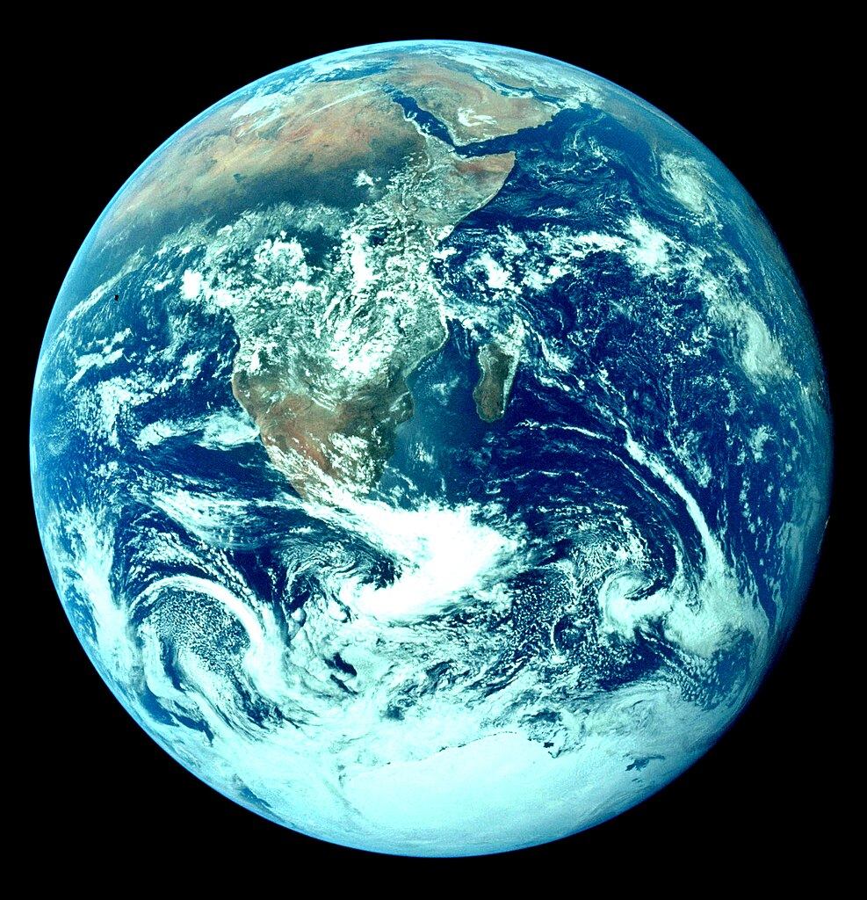
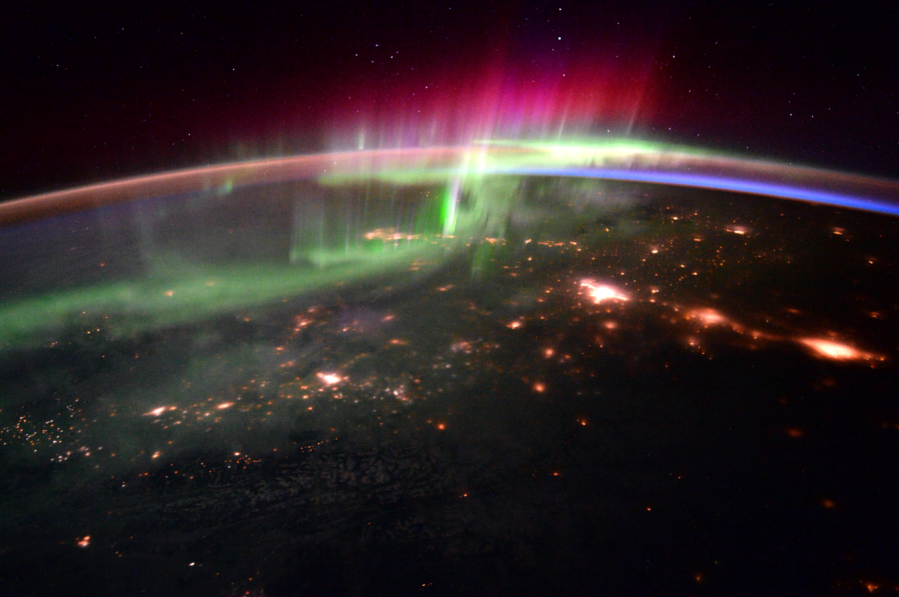

• Type : Planète tellurique (rocheuse)
• Diamètre : 12 742 km
• Distance du Soleil : 149,6 millions de km (1 unité astronomique)
• Durée d'un jour : 23 heures, 56 minutes et 4 secondes
• Durée d'une année : 365,25 jours
• Nombre de satellites : 1 (la Lune)
• Température moyenne : 15°C (varie de -88°C à 58°C)
• Atmosphère : 78% azote, 21% oxygène, 1% autres gaz (argon, dioxyde de carbone, etc.)
La Terre est notre planète d'origine, la seule connue à ce jour qui abrite la vie. Son nom vient du mot anglo-saxon "ertha" qui signifie sol ou terre. Vue de l'espace, elle apparaît comme une sphère bleue en raison de la prédominance des océans qui couvrent environ 71% de sa surface.
Notre planète occupe une position privilégiée dans le système solaire, située dans ce que les astronomes appellent la "zone habitable" - ni trop proche ni trop loin du Soleil, permettant à l'eau d'exister sous forme liquide à sa surface, condition essentielle à l'apparition et au maintien de la vie telle que nous la connaissons.
La Terre est une planète géologiquement active. Sa surface est divisée en plaques tectoniques qui se déplacent lentement, provoquant des phénomènes comme les tremblements de terre, les éruptions volcaniques et la formation des chaînes de montagnes. Cette activité géologique, combinée à l'érosion causée par l'eau et le vent, façonne constamment le paysage terrestre.
L'atmosphère terrestre joue un rôle crucial dans la régulation de la température de la planète grâce à l'effet de serre naturel. Elle nous protège également des rayonnements cosmiques nocifs et des météorites, dont la plupart se désintègrent avant d'atteindre la surface.
Ce qui rend la Terre véritablement unique dans notre système solaire est sa biosphère - l'ensemble des êtres vivants et leurs habitats. La vie sur Terre est d'une diversité extraordinaire, avec des millions d'espèces différentes adaptées à pratiquement tous les environnements, des profondeurs océaniques aux sommets montagneux, des déserts arides aux forêts tropicales humides.
L'apparition de la vie remonte à environ 3,5 à 4 milliards d'années, peu après la formation de la planète il y a 4,54 milliards d'années. Depuis, la vie a profondément transformé la Terre, notamment en enrichissant son atmosphère en oxygène grâce à la photosynthèse des plantes et des cyanobactéries.
Notre planète est accompagnée d'un satellite naturel, la Lune, qui influence les marées et stabilise l'axe de rotation terrestre. Cette stabilité a probablement joué un rôle important dans le développement de la vie complexe.
La Terre tourne sur elle-même selon un axe incliné de 23,5 degrés par rapport à son plan orbital, ce qui provoque les saisons. Elle effectue une rotation complète en environ 24 heures (un jour) et une révolution autour du Soleil en 365,25 jours (une année).
Depuis l'espace, la Terre apparaît comme un joyau bleu et blanc, avec ses océans, ses nuages et ses masses continentales. Cette vision, capturée pour la première fois lors des missions Apollo, a profondément changé notre perception de notre planète, soulignant sa beauté mais aussi sa fragilité dans l'immensité de l'espace.

La célèbre photo "Blue Marble" prise par l'équipage d'Apollo 17 en 1972

Aurores boréales photographiées depuis la Station Spatiale Internationale

La Terre vue de nuit, montrant les lumières des zones urbaines
Chez Cosmos Explorer, nous proposons plusieurs façons de redécouvrir notre planète sous un angle astronomique :
• Observation depuis l'espace : Grâce à notre partenariat avec des agences spatiales, nous proposons des sessions en direct avec des astronautes à bord de la Station Spatiale Internationale.
• Géologie comparative : Nos ateliers explorent les similitudes et différences entre la Terre et les autres planètes telluriques du système solaire.
• Exposition "Terre vue de l'espace" : Une collection de photographies spectaculaires prises par des satellites et des astronautes, montrant la beauté et la fragilité de notre planète.
• Ateliers sur le climat : Découvrez comment l'étude des autres planètes nous aide à mieux comprendre le climat terrestre et ses évolutions.
Pour plus d'informations sur nos programmes d'exploration de la Terre dans son contexte astronomique, consultez notre page d'exploration ou contactez-nous.